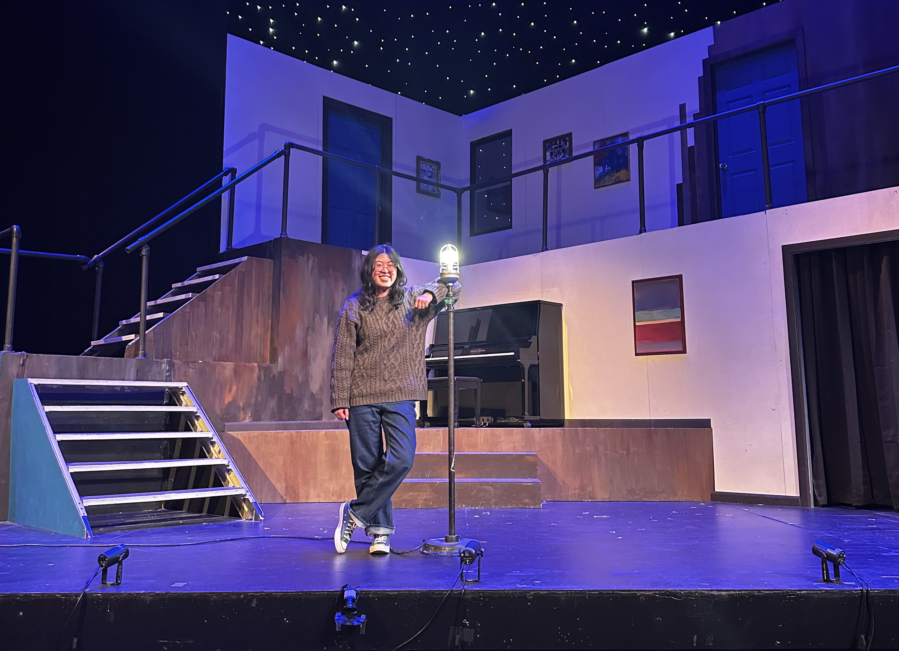

the not-so-secret side of me...
When I'm not crunching numbers to learn about the world, I'm probably reading a play or hanging lights. I am the Harvard-Radcliffe Dramatic Club’s Co-Vice President and former Tech Chair, and primarily a lighting designer and director who dabbles in producing and playwriting. I also proctor the First Year Arts Program, an arts-based freshman orientation program. Here's a brief history of shows I've worked on!
